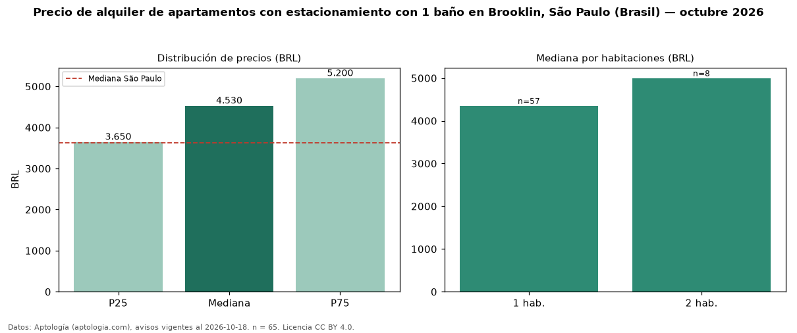

Precio de alquiler de apartamentos con estacionamiento con 1 baño en Brooklin, São Paulo (Brasil) — octubre 2026
En Brooklin, São Paulo (Brasil), la mediana de canon mensual de apartamentos con estacionamiento con 1 baño es BRL 4.530, según 65 avisos vigentes. Eso es 45 % menos que la mediana de los apartamentos con estacionamiento en alquiler de Brooklin (BRL 8.300, n = 282); este segmento reúne el 23 % de esos avisos. Por metro cuadrado, la mediana es BRL 101/m² al mes (n = 65), 0 % por debajo de los apartamentos con estacionamiento en alquiler de Brooklin (BRL 102/m²). El área mediana anunciada es 46 m². El segmento con más oferta es el de 1 habitación (57 avisos, mediana BRL 4.350); pasar de 1 habitación a 2 habitaciones cambia la mediana +15 %. La cuota de mantenimiento o condominio mediana declarada es BRL 886 al mes (n = 64), aparte del canon. La mediana de todos los apartamentos en alquiler de São Paulo es BRL 3.621 (+25 % de diferencia). La mitad central de los avisos va de BRL 3.650 a BRL 5.200 (razón 1,4), una dispersión moderada. Datos: Aptología (aptologia.com), CC BY 4.0 — https://www.aptologia.com/br/aluguel/sao-paulo/brooklin. Archivos: PDF, CSV con las cifras y gráfica PNG.

| Avisos únicos | 65 |
|---|---|
| Percentil 25 | COP 3.650 |
| Mediana | COP 4.530 |
| Percentil 75 | COP 5.200 |
| Mediana por m² | COP 101 |
Fuente: avisos vigentes de portales inmobiliarios recopilados por Aptología, deduplicados (mínimo 30 avisos únicos por celda). Precios pedidos, no cerrados. Fecha: 2026-10-18.